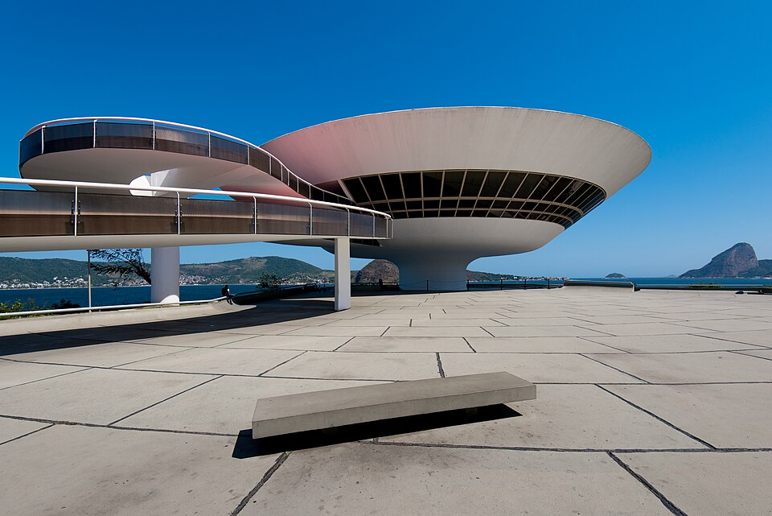

Clipe
O Museu

O MAC Niterói foi projetado pelo arquiteto Oscar Niemeyer. Ele tem formato redondo e muita gente fala que parece um disco voador pousado em cima da pedra do Mirante da Boa Viagem.
Em volta do prédio tem um espelho d'água que reflete o museu, e para entrar tem uma rampa vermelha bem famosa. Lá de dentro dá pra ver a Baía de Guanabara, o Pão de Açúcar e o Rio de Janeiro.
Informações
Inauguração
2 de setembro de 1996
Arquiteto
Oscar Niemeyer
Engenheiro
Bruno Contarini
Altura
16 metros
Onde fica
Mirante da Boa Viagem, s/n - Boa Viagem, Niterói - RJ
Integrantes
- Murilo
- Dilton
- João Gomes
- Kevin
- Natália
- Rodrigo